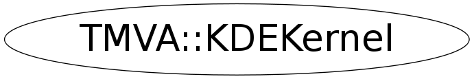

Function Members (Methods)
public:
| virtual | ~KDEKernel() |
| static TClass* | Class() |
| Float_t | GetBinKernelIntegral(Float_t lowr, Float_t highr, Float_t mean, Int_t binnum) |
| const char* | GetName() const |
| virtual TClass* | IsA() const |
| TMVA::KDEKernel | KDEKernel(const TMVA::KDEKernel&) |
| TMVA::KDEKernel | KDEKernel(TMVA::KDEKernel::EKernelIter kiter = kNonadaptiveKDE, const TH1* hist = 0, Float_t lower_edge = 0., Float_t upper_edge = 1., TMVA::KDEKernel::EKernelBorder kborder = kNoTreatment, Float_t FineFactor = 1.) |
| TMVA::KDEKernel& | operator=(const TMVA::KDEKernel&) |
| void | SetKernelType(TMVA::KDEKernel::EKernelType ktype = kGauss) |
| virtual void | ShowMembers(TMemberInspector& insp) |
| virtual void | Streamer(TBuffer& b) |
| void | StreamerNVirtual(TBuffer& b) |
Data Members
public:
| enum EKernelType { | kNone | |
| kGauss | ||
| }; | ||
| enum EKernelIter { | kNonadaptiveKDE | |
| kAdaptiveKDE | ||
| }; | ||
| enum EKernelBorder { | kNoTreatment | |
| kKernelRenorm | ||
| kSampleMirror | ||
| }; |
private:
| Float_t | fFineFactor | fine tuning factor for Adaptive KDE: factor to multiply the "width" of the Kernel function |
| TH1F* | fFirstIterHist | histogram to be filled in the hidden iteration |
| Bool_t | fHiddenIteration | Defines if whats currently running is the |
| TH1F* | fHist | copy of input histogram |
| TMVA::KDEKernel::EKernelIter | fIter | iteration number |
| TMVA::KDEKernel::EKernelBorder | fKDEborder | The method to take care about "border" effects |
| TF1* | fKernel_integ | the integral of the Kernel function |
| TMVA::MsgLogger* | fLogger | message logger |
| Float_t | fLowerEdge | the lower edge of the PDF |
| Float_t | fSigma | Width of the Kernel function |
| TH1F* | fSigmaHist | contains the Sigmas Widths for adaptive KDE |
| Float_t | fUpperEdge | the upper edge of the PDF |
Class Charts
{kind=link}
{kind=link}
{kind=link}
{kind=link}

Function documentation
KDEKernel(TMVA::KDEKernel::EKernelIter kiter = kNonadaptiveKDE, const TH1* hist = 0, Float_t lower_edge = 0., Float_t upper_edge = 1., TMVA::KDEKernel::EKernelBorder kborder = kNoTreatment, Float_t FineFactor = 1.)
constructor sanity check
void SetKernelType(TMVA::KDEKernel::EKernelType ktype = kGauss)
Float_t GetBinKernelIntegral(Float_t lowr, Float_t highr, Float_t mean, Int_t binnum)
calculates the integral of the Kernel
KDEKernel(TMVA::KDEKernel::EKernelIter kiter = kNonadaptiveKDE, const TH1* hist = 0, Float_t lower_edge = 0., Float_t upper_edge = 1., TMVA::KDEKernel::EKernelBorder kborder = kNoTreatment, Float_t FineFactor = 1.)